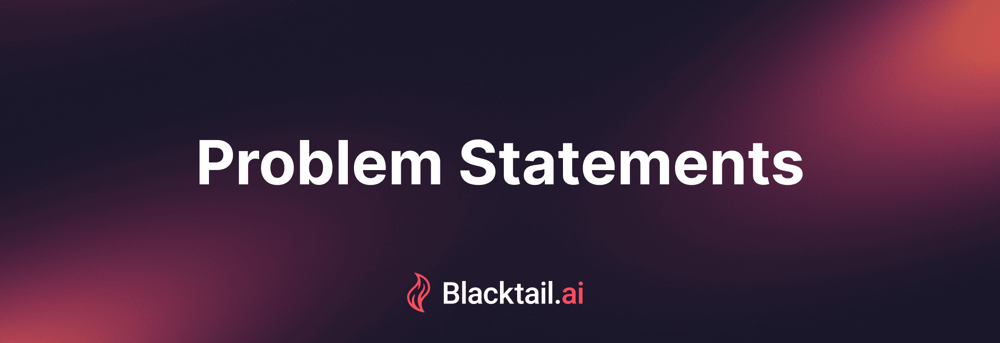

Start Building
Twitter
Telegram
Powered by
Start Building
Twitter
Telegram
Powered by

#
Problem Statements
AI's Tendency Towards Centralization
problem-statements-1/
Licensing of AI
problem-statements-2/
Fragmentation and Accessibility of AI Subscription Models
problem-statements-4/
The Lack of General Structures for Training AI
problem-statements-6/
Cryptocurrency Payments
problem-statements-5/
Fear Mongering of AI
problem-statements-3/
The Lack of GPU Depin Software Platforms
problem-statements-7/